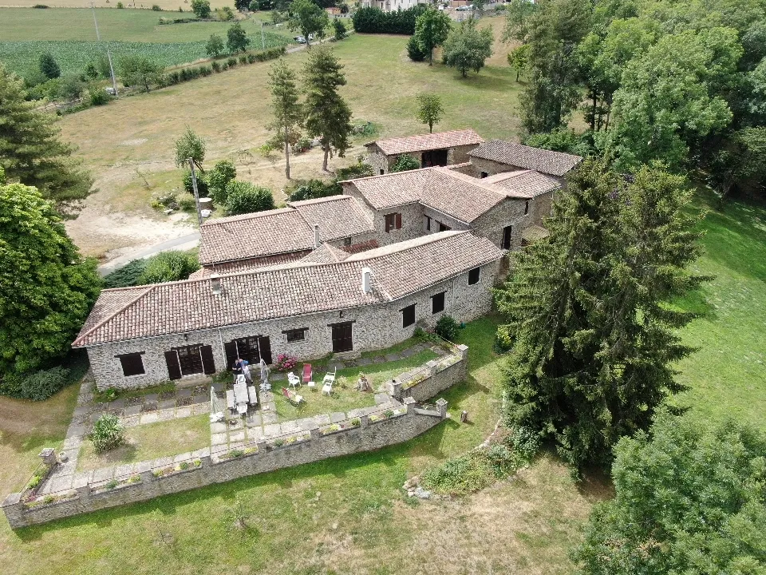
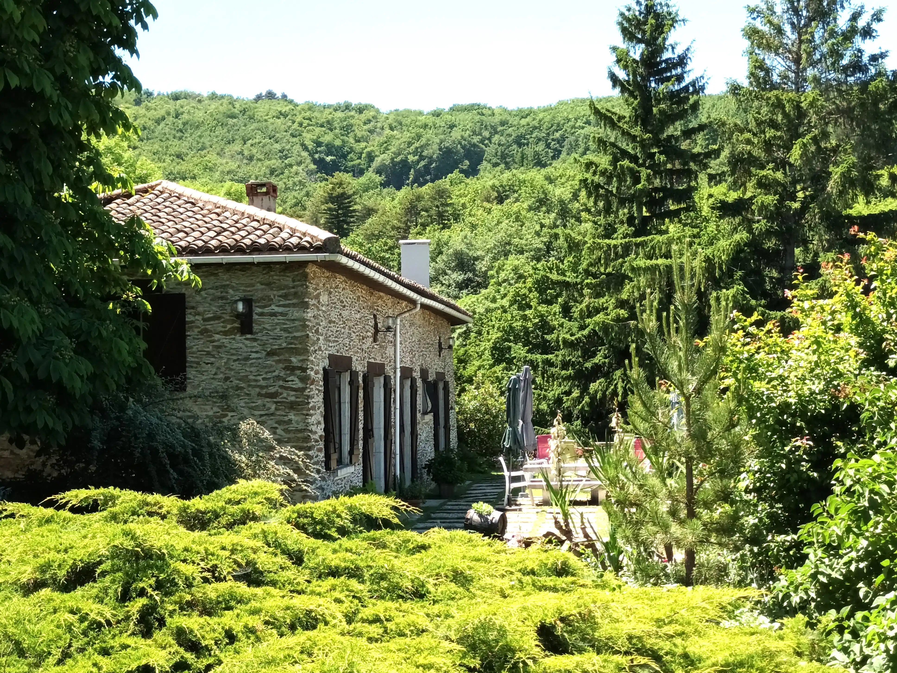
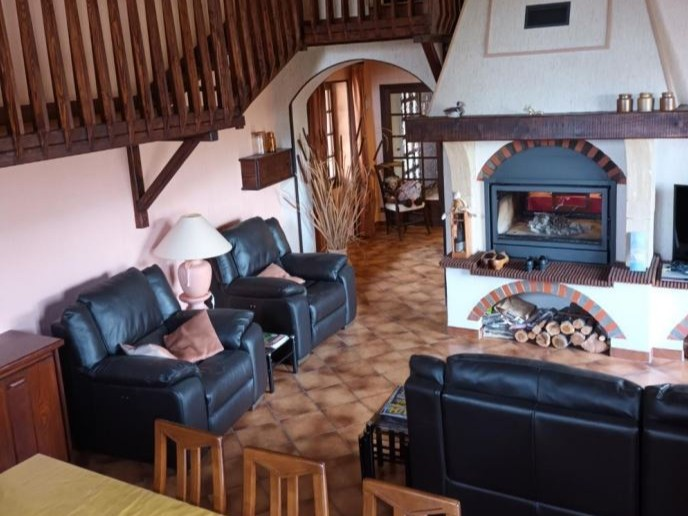
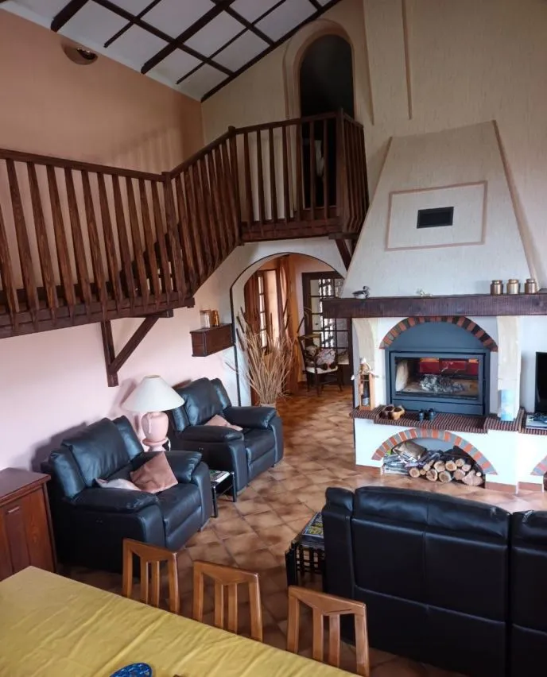
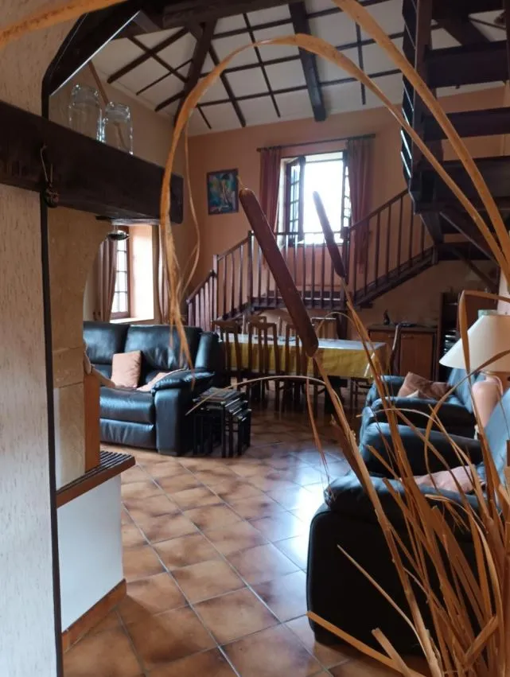
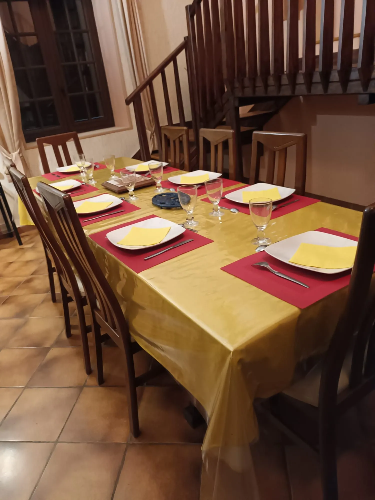
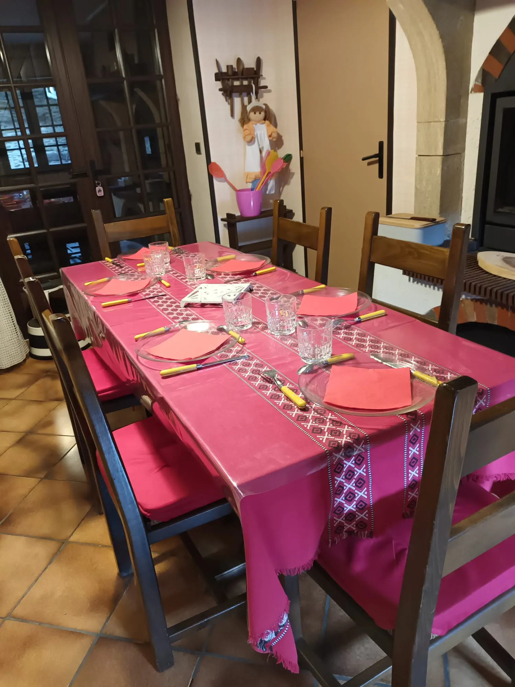
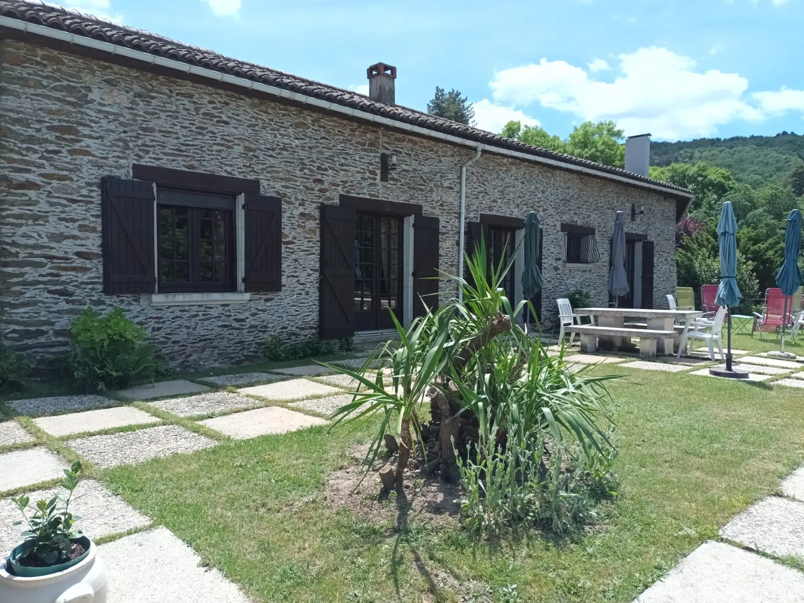
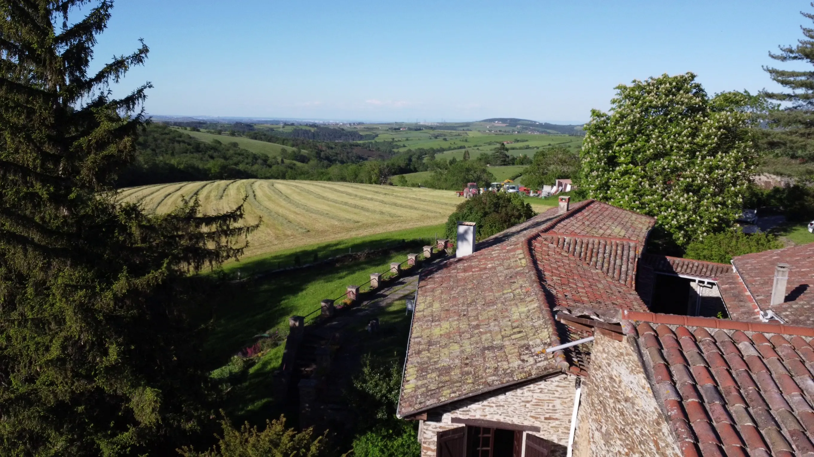

Un lieu chargé d'histoire
Les "balas" désignaient autrefois les genêts dont on faisait les balais. C’est aussi le nom de la famille qui a vécu depuis le XVème siècle dans cette ferme et a donné son nom au hameau.
Pour les amoureux de la nature, notre gîte est situé dans le parc naturel régional du Pilat, lieu privilégié pour de belles balades à pied ou à vélo au départ de la maison.


Le confort d'un gîte entièrement équipé
Le gîte comporte un grand salon-salle à manger, une cuisine entièrement équipée, et deux salles de bain pour votre confort. Des moustiquaires aux fenêtres vous assurent des nuits paisibles.
Quatre chambres pour 6 à 8 personnes :
- Un lit double 160x190
- Deux lits doubles 140x190
- Deux lits gigogne 80x190 (formant deux lits doubles)
L’extérieur est agrémenté d’une belle terrasse avec vue, équipée d’une table et de bancs en pierre, de parasols et de sièges de relaxation.
À la demande : accès à une remise pour vos vélos, une buanderie et une salle à manger d’été.
Découvrez le gîte en images
Intérieur

1 / 20



Extérieur
1 / 16


Les équipements du gîte en bref
Animaux non acceptés
Soirées festives non adaptées
Activités et découvertes dans le Pilat
Les amateurs de randonnées trouveront au gîte des cartes et des guides proposant de nombreux circuits à pied ou en vélo.
Aux alentours, vous pourrez visiter de nombreux sites d'intérêt :
Randonnées locales
Découvrez les sentiers au départ du gîte. Cartes et guides à disposition pour tous les niveaux, à pied ou à vélo.
Découvrir les sentiers
Sainte-Croix-en-Jarez
Visitez cet ancien monastère chartreux devenu un village unique, classé parmi les Plus Beaux Villages de France.
Découvrir le village
Vienne la Romaine
Plongez dans l'histoire avec son théâtre antique, le temple d'Auguste et de Livie, et le site de Saint-Romain-en-Gal.
Explorer l'histoire
Musées de la région
À proximité de Lyon et Saint-Étienne, profitez d'un accès facile à une riche offre culturelle (Musée des Confluences, Musée d'Art Moderne...).
Voir les musées
Parc du Pilat
Explorez les crêts du Pilat pour des panoramas exceptionnels, découvrez la faune et la flore locales et dégustez les produits du terroir.
Explorer le parc
Parc Animalier
Une sortie idéale en famille à l'Espace Zoologique de Saint-Martin-la-Plaine, réputé pour son engagement dans la protection des espèces.
Visiter le parc
Tarifs & Disponibilités de notre gîte
Nous vous accueillons du 1er mai au 31 octobre.
Forfait 2 nuits (minimum)
580€
Nuit supplémentaire
90€
Semaine complète (7 nuits)
990€
Semaine supplémentaire
850€
Ménage fin de séjour (optionnel)
90€
Ces tarifs sont tout compris (fourniture des draps, linge de toilette, eau, électricité, Wifi) hormis la taxe de séjour.
Contact et Réservation
Votre hôte, Marie-Noëlle BERLIOZ, sera ravie de vous accueillir.
Langues parlées : Français, Anglais, Espagnol.